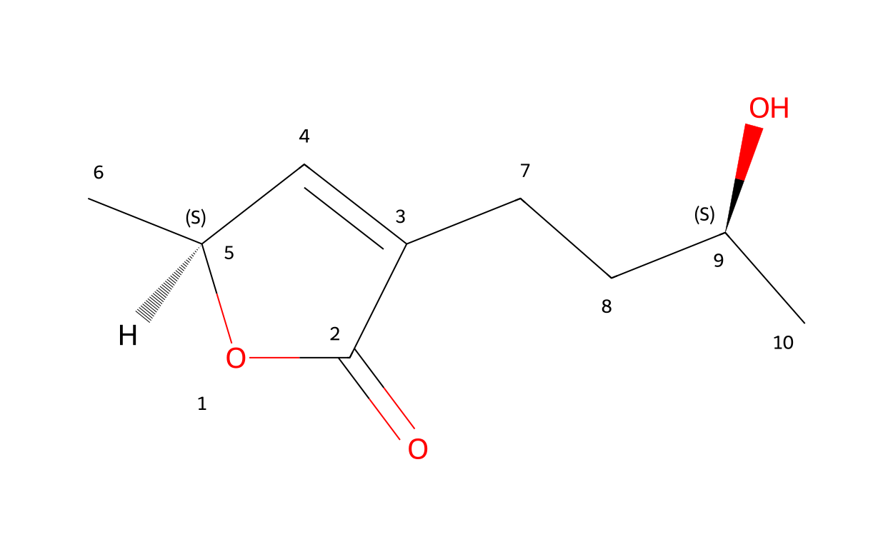
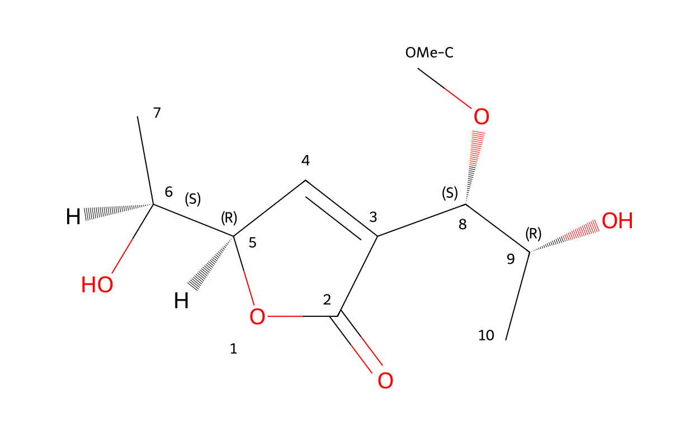
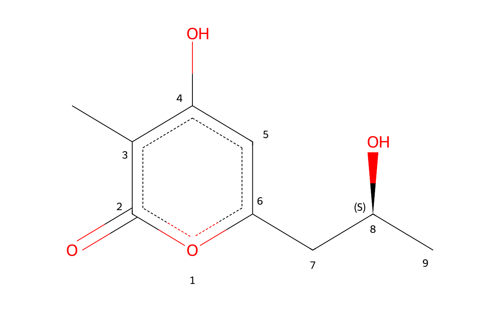

Analysis scope
核对原图的不饱和五元内酯、羟乙基连接及作者报告的5S。SI的烯氢/烯碳和名义质量支持图示不饱和结构；原报“γ-butyrolactone”名称单独保留，候选结构名写作(5S)-3-(2-hydroxyethyl)-5-methyl-2(5H)-furanone。
Recorded collection context, source profiles and compound associations.
| Structure | Compound | Formula | Classification | Activity records | Admitted evidence rows |
|---|---|---|---|---|---|
 Structure image unavailable Structure image unavailable | (5S)-3-(2-hydroxyethyl)-5-methyl-2(5H)-furanoneConnections → | C7H10O3 | Polyketide | 2 | 2 |
 Structure image unavailable Structure image unavailable | AspiketolactonolConnections → | C9H12O4 | Polyketide | 1 | 1 |
 Structure image unavailable | Aspilactonol AConnections → | C9H14O3 | Polyketide | 1 | 1 |
 Structure image unavailable Structure image unavailable | Aspilactonol BConnections → | C9H14O5 | Polyketide | 2 | 2 |
 Structure image unavailable Structure image unavailable | Aspilactonol CConnections → | C9H14O5 | Polyketide | 2 | 2 |
 Structure image unavailable | Aspilactonol DConnections → | C10H16O5 | Polyketide | 2 | 2 |
 Structure image unavailable Structure image unavailable | Aspilactonols E/F (1:1 C9-epimer mixture)Connections → | C9H14O4 | Polyketide | 2 | 2 |
 Structure image unavailable | Chaetoquadrin FConnections → | C9H12O4 | Polyketide | 1 | 1 |
 Structure image unavailable Structure image unavailable | DihydroaspyroneConnections → | C9H14O4 | Polyketide | 2 | 2 |
 Structure image unavailable Structure image unavailable | EpiaspinonediolConnections → | C9H14O3 | Polyketide | 6 | 6 |
核对原图的不饱和五元内酯、羟乙基连接及作者报告的5S。SI的烯氢/烯碳和名义质量支持图示不饱和结构；原报“γ-butyrolactone”名称单独保留，候选结构名写作(5S)-3-(2-hydroxyethyl)-5-methyl-2(5H)-furanone。
核对五元不饱和内酯、羟乙基与酮侧链连接；保留作者以CD和偶合报告的5R、6S。旋光浓度正文两处不同，已分别保留，不用浓度差异补定构型。
核对五元内酯、甲基及羟基丁基侧链；保留作者CD/Mosher报告的5S、9S。来源编号由Figure1与2a/2b数据确认，3.5标题中的“1”差异已保留。
核对与编号3相同的连接和不同的8/9位构型。作者以CD、偶合和诱导CD报告5R、6S、8R、9S。左图为3/4合图，请按图下注明的4:8R,9S核对；3已有同构型现库记录，不请求重复确认。
核对C8上的甲氧基连接以及5R、6S、8S、9R。这些是作者CD/Mosher和偶合的赋值，未重新计算ECD；旋光原值为−1.7。
{ "parent_id": "24871461_6_7", "source_compound_numbers": [ "6", "7" ], "reported_name": "Aspilactonols E/F (1:1 C9-epimer mixture)", "candidate_smiles": "C[C@H](O)[C@H]1C=C(C[C@H](C)O)C(=O)O1 |&1:7|", "accepted_smiles": null, "mixture_ratio": "approximately1:1 by NMR", "mixture_ratio_basis": "reported NMR pair intensities;not independent composition measurement", "shared_configuration": "5R,6S", "variable_site": "C9", "AND_group_scope": "C9 only;5R6S remain author absolute assignments", "individual_E_F_to_C9_R_S_mapping": null, "variants": [ { "variant_id": "C9-R", "name_to_Aspilactonol_E_or_F_assignment": null, "candidate_smiles": "C[C@H](O)[C@H]1C=C(C[C@@H](C)O)C(=O)O1", "redraw_file": "[local evidence archive path omitted]", "redraw_sha256": "01bd771994093c92b9e8540bb134fd8762db84cab07cce32173ce0c3e4dfad6f", "paper_CIP": { "5": "R", "6": "S", "9": "R" }, "scope": "Independently positioned numbered graph;labels20+ not shown;OMe-C denotes unlabeled methoxy carbon;author absolute assignment or explicit unknown preserved" }, { "variant_id": "C9-S", "name_to_Aspilactonol_E_or_F_assignment": null, "candidate_smiles": "C[C@H](O)CC1=C[C@H]([C@H](C)O)OC1=O", "redraw_file": "[local evidence archive path omitted]", "redraw_sha256": "2565817de1cd22fd04b475e932c1982273f415e8ebe665426424862dcfef5919", "paper_CIP": { "5": "R", "6": "S", "9": "S" }, "scope": "Independently positioned numbered graph;labels20+ not shown;OMe-C denotes unlabeled methoxy carbon;author absolute assignment or explicit unknown preserved" } ], "public_page_allowed": false, "evidence": [ { "evidence_id": "24871461_main_2_mixture.structure", "source_id": "PMID:24871461:main", "field_path": "mixture.structure", "PDF_page": 2, "pdf_page": 2, "locator": "Figure1 6/7", "figure": "Figure1 6/7", "quote_or_summary": "Figure1 6/7", "file": "[local evidence archive path omitted]", "sha256": "baad03a7d03995b24f8447e5e752da4b3e8c71c157fb8d22af8cd170f4dd4161", "verification_status": "agent_primary_checked_not_researcher_terminal_review" }, { "evidence_id": "24871461_main_8_mixture.ratio", "source_id": "PMID:24871461:main", "field_path": "mixture.ratio", "PDF_page": 8, "pdf_page": 8, "locator": "2.2 compound6/7 epimeric mixture", "figure": "2.2 compound6/7 epimeric mixture", "quote_or_summary": "2.2 compound6/7 epimeric mixture", "file": "[local evidence archive path omitted]", "sha256": "baad03a7d03995b24f8447e5e752da4b3e8c71c157fb8d22af8cd170f4dd4161", "verification_status": "agent_primary_checked_not_researcher_terminal_review" } ] }
只确认一份约1:1的C9差向异构混合物：共同5R、6S，C9两种可能分别重绘。原文未把E/F名称分别对应到9R/9S，不能将右图标作单独E或F。混合物量及活性均保持共同范围。现库另一来源的Aspilactonol E保留原状。
核对α-吡喃酮环上的羟基、甲基、羟丙基连接及原图8S。结构按本篇已知物编号14及SI物性映射；外库只作完整图一致性检查。
核对支链共轭二烯连接、原图对应的3E/5Z与作者报告的7R。作者7R依据为与已知aspinonediol比较及相反旋光符号，并非本项独立Mosher/ECD终证。外库命中的7S aspinonediol已排除，不能转移其活性或标识。